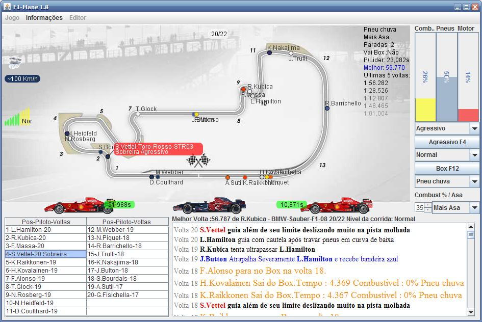
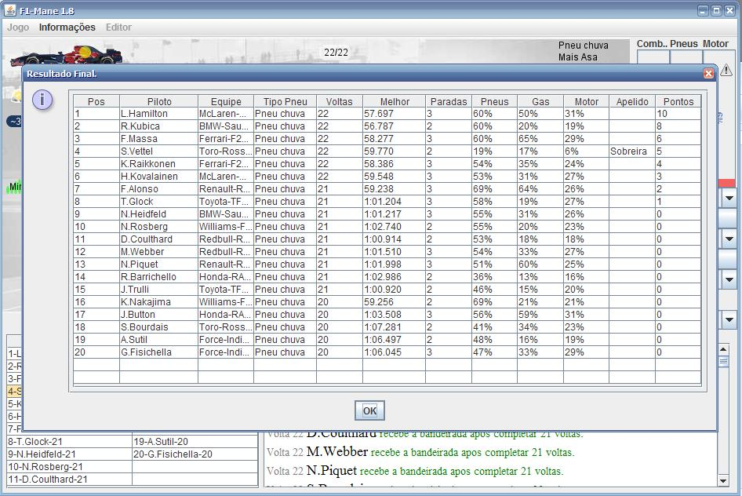
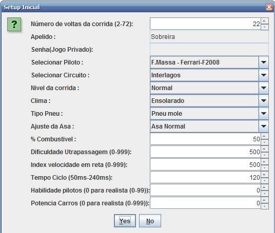

Clique para Baixar o arquivo jar.(Executa com o javaw)
Para executar o jogo ou o editor de pistas, abra o console e digite javaw -jar f1mane.jar
Clique no botao iniciar jogo para iniciar o jogo via applet